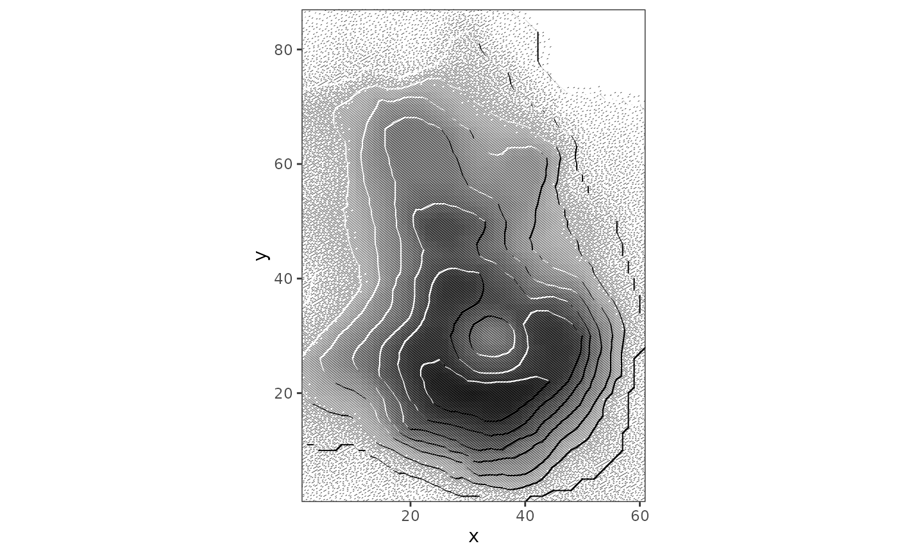

Wraps a contour layer, or any path layer, so that each segment is lit or shaded according to the direction of
its slope relative to a light source. This is Kitiro Tanaka's illuminated-contour method. Lit segments are drawn
in paper colour and shaded segments in ink. Both widen as the slope faces the light more directly. A hairline base
contour is drawn under both. Over a geom_halftone() field or a hatched engraving, the paper segments cut through
the screen and the surface appears in relief.
Arguments
- layer
A
geom_contour(),geom_path()orgeom_line()layer; a list holding one; or a whole plot or patchwork, in which case every layer in it is wrapped. The object handed in is left alone.- light
Azimuth of the light in degrees, clockwise from north; 315 is upper left.
- width
Line width in mm at grazing and at full illumination,
c(min, max).- colours
Named vector:
lit(the paper colour of the plot),shade(ink),base(the hairline contour under both;NAfor none).- uphill
"auto","left"or"right"of the path direction.- x
A
reliefgrob (internal;makeContentmethod).
Details
With uphill = "auto", the uphill side of each contour is inferred from the nearest neighbouring contour at
another level. A closed ring with no such neighbour is treated as a summit. For a path that is not a contour, set
uphill explicitly.
Draw this over a screened field. Lit segments are paper-coloured, so on bare paper they are invisible and only the shaded half of each contour appears.
References
Tanaka, K. (1950). The relief contour method of representing topography on maps. Geographical Review, 40(3), 444-456. doi:10.2307/211219
Examples
vol <- data.frame(expand.grid(x = seq_len(ncol(volcano)), y = seq_len(nrow(volcano))),
z = as.vector(t(volcano)))
ggplot2::ggplot(vol, ggplot2::aes(x, y, z = z)) +
geom_halftone(shape = "line", colour = "black", angle = 30) +
with_relief(ggplot2::geom_contour(bins = 10)) + ggplot2::coord_equal(expand = FALSE) +
ggplot2::theme_bw() + theme_halftone()
